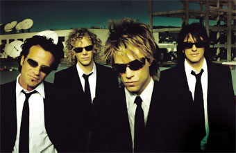

 Banda del llamado Heavy comercial, formada en New Jersey con Jon Bon Jovi (nacido como John Bongiovi, en marzo de 1962) al frente. Es uno de los grupos de rock que más han vendido desde su creación en 1983; lo integran con Richie Sambora (1959), David Bryan (1962), Alec John Such (1956) y Tico Torres (1953). Fichados por Mercury, en 1984 lanzaron su álbum de debut, Bon Jovi, que no pasó del puesto 39 en las listas de su país. Pero empezaron a romper con su Slippery When Wet, que vendió más de nueve millones de copias en los Estados Unidos y que llegó al número uno. Corría el año 1986, y el grupo ya había dado conciertos por toda Norteamérica durante esos dos años.
Mantenerse en giras casi permanentes dio buenos frutos, puesto que acabaron los ochenta con cuatro números uno en las listas, consagrados como la banda heavy más popular del planeta, y encabezando los más importantes festivales como el de Monsters of Rock en 1987 (Donington, UK.). Poco después lanzaron el que sería otro clásico de Bon Jovi, New Jersey, en 1988. Su cantante también editó grabaciones en solitario, con enorme éxito, y fue imitado en ello por el resto del grupo. Una muestra del trabajo en solitario de Jon Bon Jovi es la banda sonora de Arma Joven II, creada en 1990, que se editó con el nombre de Blaze of Glory. Pero el grupo volvió a grabar como tal en 1992, publicando Keep the faith. Su álbum de éxitos de 1995 recogió lo mejor de su repertorio, cada vez más inclinado a las baladas y a los temas de medio tiempo, abandonando un tanto su energía inicial.
Richie Sambora, pese a nacer en Perth Amboy, pasó su infancia en Woodbridge, aprendió a tocar la guitarra a los doce años y desde los quince fue pasando de grupo en grupo hasta integrarse en Bon Jovi. Al margen de su presencia en la banda, Sambora es autor y productor de artistas y formaciones de la talla de Alice Cooper, Cher, Ted Nugent, Paul Rogers, Desmond Child, Bo Diddley, Loverboy o B. B. King. Su primer álbum en solitario, Stranger in this town, contenía el single Mr. Bluesman, dedicado a Eric Clapton, quien colaboró en la grabación del tema. Además de haber compuesto bandas sonoras para películas, a principios de noviembre de 1996 editó un CD-Rom de título Richie Sambora Interactive Guitar, consistente en un curso de guitarra, biografías, fotografías personales, discografías y videos de sus trabajos individuales y en el seno de Bon Jovi. Richie Sambora lanzó en el año 1998 un nuevo registro, titulado Undiscovered Soul, que sigue en la línea ascendente marcada por su primer disco en solitario. Por su parte, Jon Bon Jovi, dejando a un lado su incipiente carrera cinematográfica, editó en el año 1997 Destination anywhere en Polygram Records, álbum que cimienta su carrera en solitario, con temas como "Midnight in Chelsea". Estos lanzamientos en solitario, demuestran que la carrera del grupo como tal cada día está más en entredicho, aunque, oficialmente, nadie ha dicho que Bon Jovi haya dejado de existir para siempre. En 2002 Bon Jovi lanzó a la calle su octavo álbum de estudio, Bounce.
| Disco | Año | Formato |
| Bon Jovi | 1984 | LP, Casete, CD |
| 7800° Fahrenheit | 1985 | LP, Casete, CD |
| Slippery When Wet | 1986 | LP, Casete, CD, DualDisc, Blu-ray Audio |
| New Jersey | 1988 | LP, Casete, CD |
| These Days | 1995 | LP, Casete, CD |
| Crush | 2000 | LP, Casete, CD |
| Bounce | 2003 | LP, CD, SACD |
| Have a Nice Day | 2005 | LP, CD, DualDisc |
| Lost Highway | 2007 | LP, CD |
| The Circle | 2009 | LP, CD |